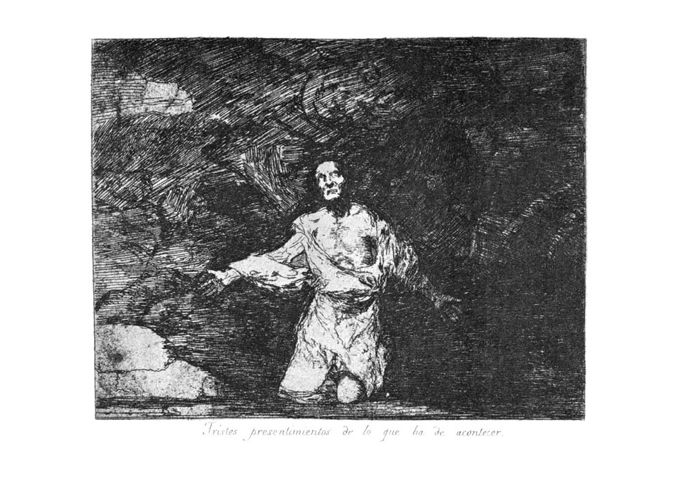

Los desastres de la guerra (1808-1814)
El periodo que media entre 1808 y 1814 está presidido por acontecimientos turbulentos para la historia de España, pues a partir del motín de Aranjuez Carlos IV se vio obligado a abdicar y Godoy a abandonar el poder. Tras el levantamiento del Dos de Mayo dio comienzo la llamada guerra de la Independencia contra las tropas invasoras del emperador francés Napoleón Bonaparte. El estallido de la guerra pilló a Goya trabajando en un Retrato ecuestre de Fernando VII que le había encargado la Academia de San Fernando En octubre viajó a Zaragoza llamado por José de Palafox, viaje en el que presenció varios hechos de armas que le inspiraron los Desastres de la guerra
Los desastres de la guerra Obras mas destacadas

Desastres de Guerraº1


Desastres de la guerraº2

Desastres de la guerraº8

Desastres de guerraº23

Desastres de guerraº27

Desastres de guerraº67

Desastres de guerraº76